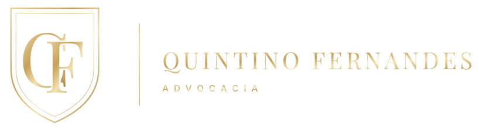

Quintino Fernandes AdvocaciaIdentidade Visual · Proposta 2026
01
Proposta de identidade visual · 2026
Quintino Fernandes
Quintino Fernandes
Advocacia
Rebranding completo: logotipo, sistema visual, papelaria, redes sociais e website. Três caminhos criativos para escolha.
